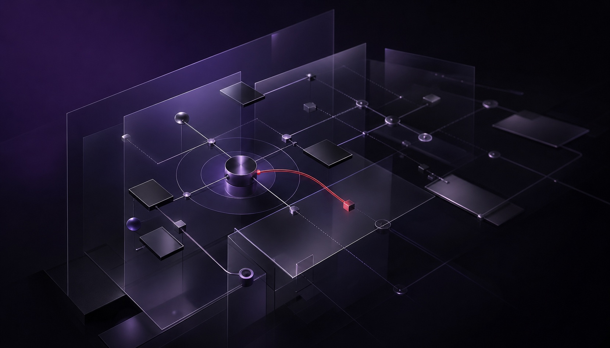

5+ Years
B2B SaaS & AI design
Sr. AI Product Designer · Enterprise SaaS & AI Agents
I build what enterprise software scientists run their experiments on — and the AI tools people want to use but hesitate to trust. Making them look good is the baseline; my real work is making them effortless — something people want to keep using.
Selected Work
AI made content cheap and attention scarce. Finfold is the growth digital employee that keeps small teams seen — researched, built, and demonstrated live.
AI Content Growth Expert · 0→1 View caseThe lab notebook pharma giants run their research on.
$100M+ Revenue View caseTurn a photo of a room into a redesigned one.
29% YoY Revenue View casePick a hotel by video, not by stock photos.
400M+ Users View caseOne design language for three products that used to reinvent the wheel.
3 Products Unified View caseA real-time Volkswagen HMI concept — showroom, cluster, console & autonomous perception in one WebGL cockpit.
Volkswagen · 4 Live Modes View caseSide Projects & Explorations
Four Journey to the West demons debut as an AI-native girl group — one song, one MV, one person, full pipeline.
Full AI Pipeline · 3'34" MV View caseCatch the subscriptions quietly draining your account.
AI + PWA View caseShort-video item gifting + We Points.
Video-First UX View caseGrounded market research with real data, AI, and backtests.
CoinLore · Kraken · Workers AI View caseA card roguelike built with an Agentic Engineering mindset.
10K+ Lines GDScript View casePinch to borrow light, open your palm to return it — plus a 3-minute AI film of the ending.
On-Device Hand Tracking View caseExpertise
Four questions every project goes through — not a framework, just habits from shipping things that had to work.
Scientists used to tap 8 screens to log one experiment. I cut it to 4. Adoption at Fortune 500 pharma climbed 35% → 52% — the last few points were pure regulatory grit. That mess is where I'm comfortable.
Built AI products from zero — interior generators, investment tools. They all hit the same wall: output looks smart, but users won't act on what they don't trust. My job is making "can I trust this?" easy to answer.
Revenue up 29% YoY, paid retention with it. Not from one magic feature — from segmenting users, showing our work, testing out of guesses. Churn moved the right way too, though pricing and market timing share the credit.
One design system across 3 enterprise products. Iteration down 25%, handoff errors down 30%. How work stops depending on me — and how I design for 400M+ user platforms without losing the thread.

Joey
New originals, recent releases, and the covers that started this page.
▶ Click a track to play
Selected Writing
Notes on AI products, complex systems, and design judgment — and what it really takes to ship one.

AI-generated concept artReal AI agents time out, lose context, and fail. I use three shipped products to show how progress, evidence, recovery, and human control should work.
Read the essay →Always happy to talk shop on AI tools, enterprise SaaS, and cross-border products.